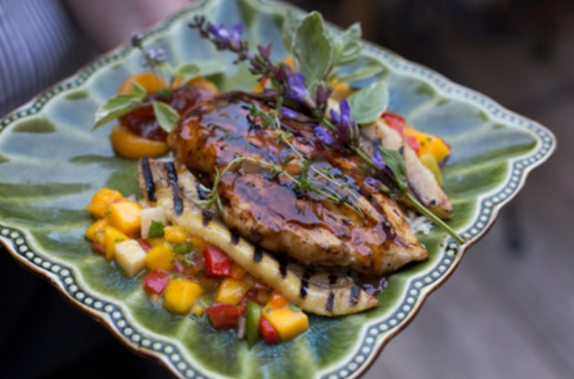

Jerk-y Chicken

Description
This is a classic jerky chicken. Easy to make.
Ingredients
For single meal:
- onion, 3 dash chopped (1g)
- brown sugar
3/4 tbsp (9g)
- olive oil
1/4 tsp (1mL)
- soy sauce
1 tbsp (15mL)
- fresh thyme, chopped
4 dash (0g)
- garlic, chopped
3/4 clove(s) (2g)
- allspice
1 dash (0g)
- habanero peppers, sliced
1/4 pepper (4g)
- boneless skinless chicken breast, raw, cut into 1 inch strips
6 oz (170g)
- red wine vinegar
1 tbsp (15mL)
Steps
- Combine the onion, brown sugar, soy sauce, vinegar, thyme, oil, garlic, allspice and habanero pepper in the container of a food processor or blender. Process until smooth. Place the chicken into a large resealable bag, and pour in 3/4 of the sauce. Squeeze out excess air, and seal. Marinate in the refrigerator for at least one hour.
- Preheat your oven's broiler.
- Remove chicken from bag, and discard marinade. Broil chicken for 10 to 15 minutes, turning once to ensure even cooking. Heat remaining sauce in a small pan, and pour over chicken when serving.